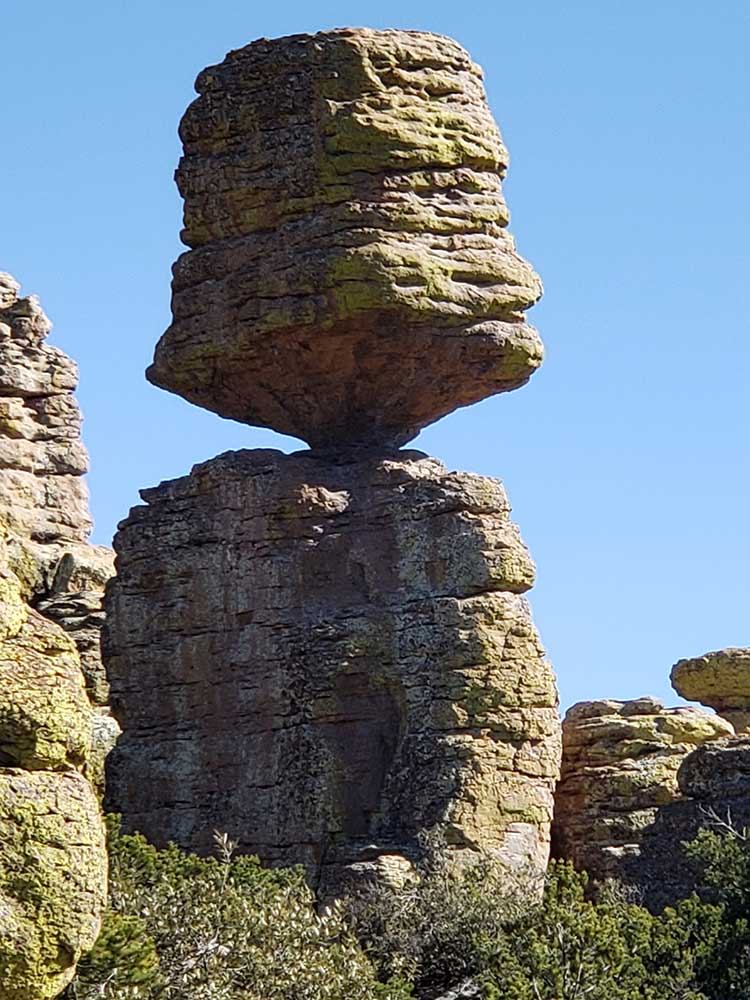
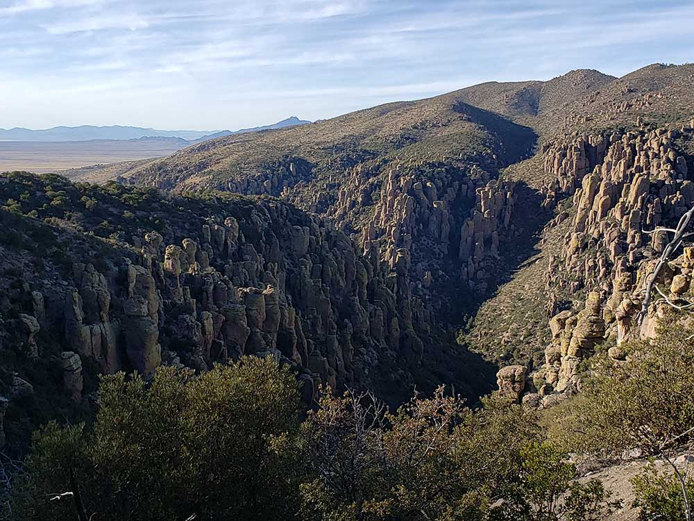
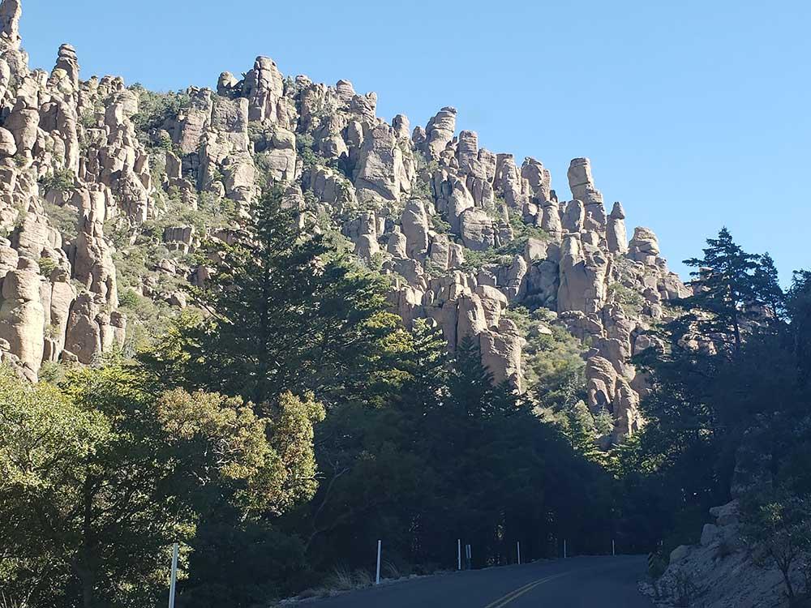
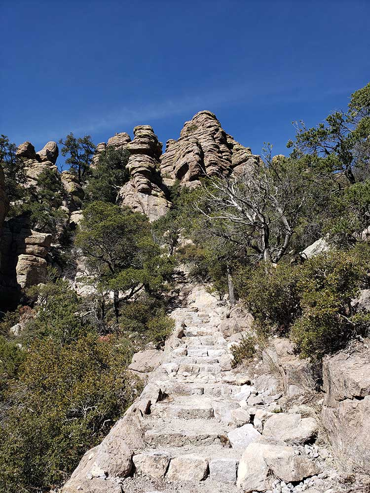
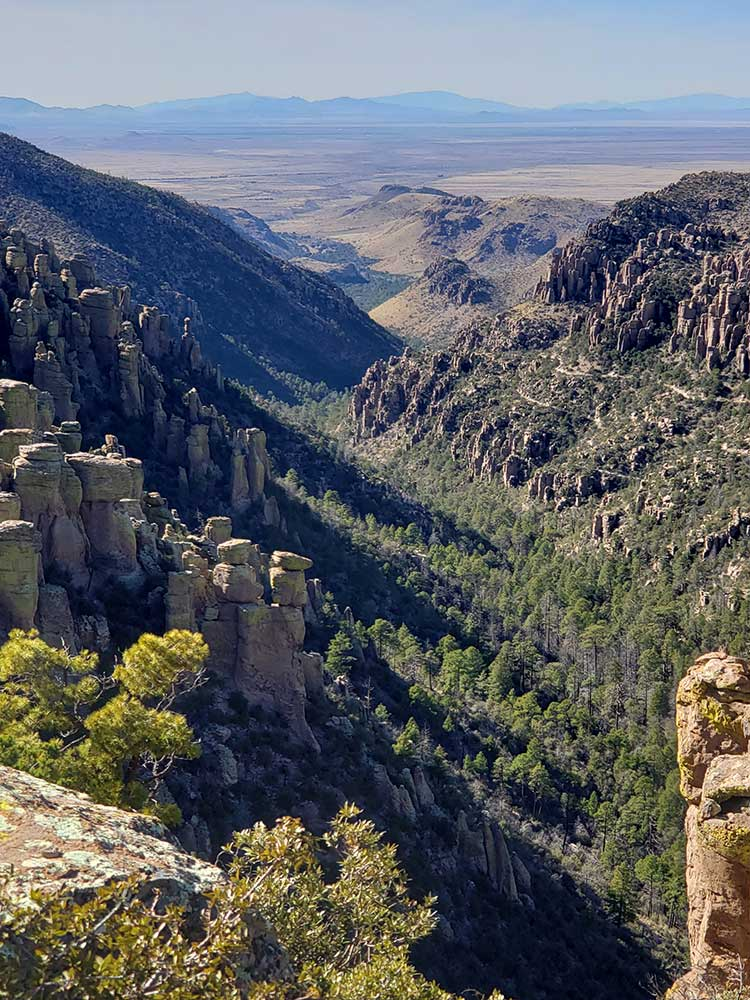
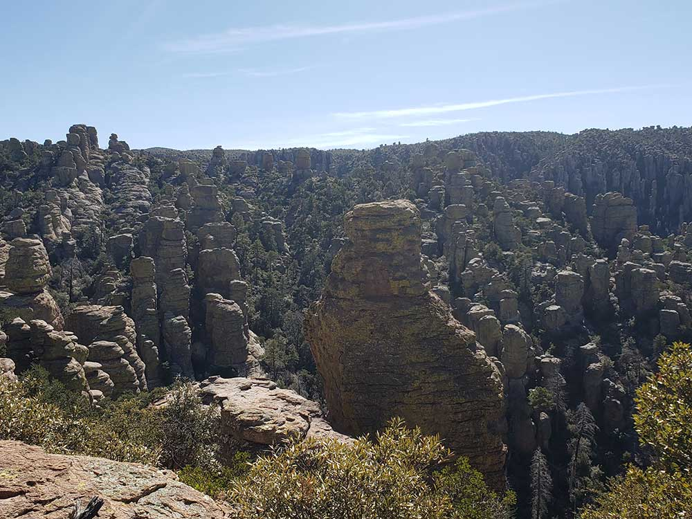
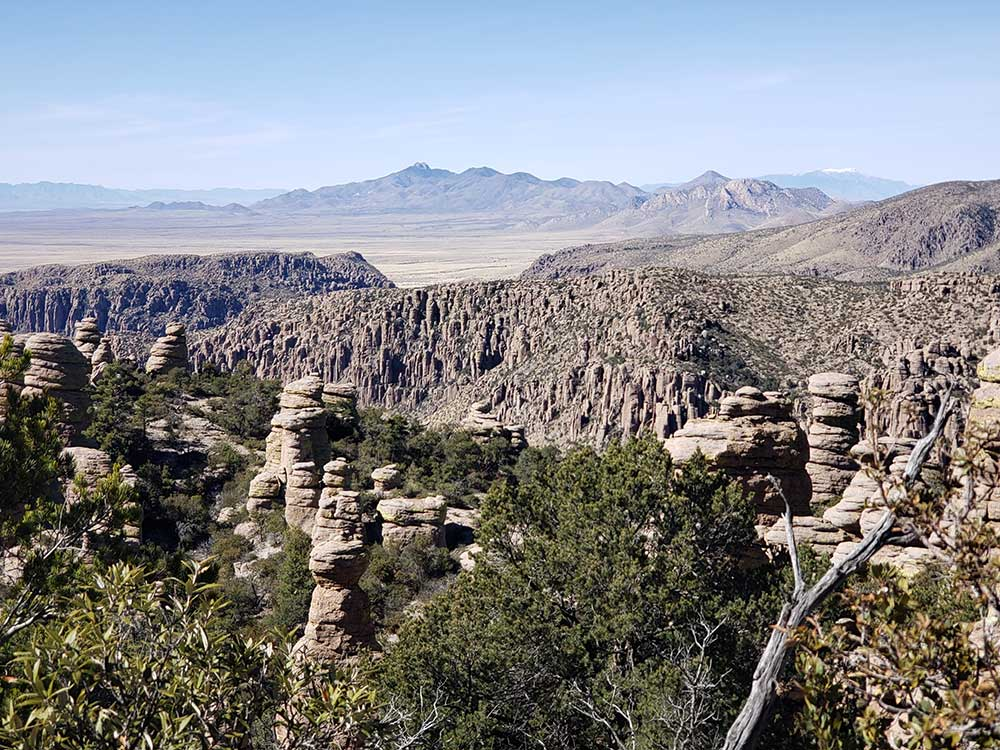

Dramatic rock pinnacles, scenic canyons, and diverse ecosystems shaped by volcanic activity and erosion over millions of years.
General Information
Visitor Center: 8:30 AM – 4:30 PM daily
Closed: Thanksgiving Day and Christmas Day
Camping (Bonita Canyon Campground): $20 per night
Reservations recommended via Recreation.gov
Not allowed in buildings or on trails above 5,500 feet
Must be leashed (max 6 ft), not tied to objects, and cleaned up after
How to Get There
From Tucson, AZ (120 mi): Take I-10 E toward El Paso for about 90 miles, exit at AZ-186 E in Willcox, then follow signs for Chiricahua National Monument via AZ-181 S to Bonita Canyon Drive.
Overview
Chiricahua National Monument protects a "Wonderland of Rocks" in the Chiricahua Mountains of southeastern Arizona, where towering columns, balanced boulders and pinnacles of volcanic rhyolite rise above forested canyons. The rocks were formed from a massive volcanic eruption about 27 million years ago and sculpted by erosion into thousands of spires. The mountains are a "sky island" where Sonoran Desert, Chihuahuan Desert, Rocky Mountain and Mexican ecosystems meet, supporting rare birds such as the elegant trogon, and the area was the homeland of the Chiricahua Apache. Established in 1924, the monument is popular with hikers, birdwatchers and photographers who come for the scenic drive, the rock formations and quiet trails.
Access
The monument is in Cochise County, about 36 miles southeast of Willcox and roughly 2 hours east of Tucson. Visitors drive from I-10 via AZ-186 and AZ-181 to the entrance, then follow the 8-mile Bonita Canyon Drive, a paved road that climbs to Massai Point at 6,870 feet. Several trailheads, the visitor center and the campground are along the road. Vehicles over 29 feet in length are not allowed on the drive, and services are limited in the area.
Seasons
The monument is open year-round, and spring and fall bring comfortable temperatures for hiking. Summer days are warm, with afternoon monsoon thunderstorms from July through September, which also bring green landscapes and good birding. Winter can bring snow and ice to the higher elevations, which may close Bonita Canyon Drive temporarily, and nights are cold. Many visitors enjoy October for clear skies and the quiet season.
Things to Do
Explore a Forest of Stone Pinnacles
Chiricahua National Monument is known for its dense forest of stone spires, balanced rocks and hoodoos that stand over the mountain canyons. Hiking among them is the main attraction.
Drive Bonita Canyon Drive to Massai Point
The scenic drive passes trailheads and overlooks and ends at Massai Point, where a short nature trail and a viewpoint give wide views over the Wonderland of Rocks and across the valleys of southeastern Arizona.
Hike Among the Hoodoos
Trails range from short walks to long loops through the Heart of Rocks area, with a network that lets hikers build their own route.
Tour Faraway Ranch
Faraway Ranch, near the visitor center, is a historic homestead and guest ranch with exhibits on the Erickson and Riggs families who lived and hosted visitors here.
Watch Birds and Wildlife
The monument is famous for birding, including Mexican jays, trogons and warblers, plus coatimundis, deer and other wildlife.
Top Trails
Echo Canyon Loop
Length: Approximately 3.3 miles loop
Elevation Gain: Moderate
Difficulty: Moderate
This popular loop descends among tight rock formations and the Grottoes, a cluster of natural rock chambers, and returns via a canyon trail. It is one of the best introductions to the hoodoos.
Heart of Rocks Loop
Length: Approximately 7 miles loop
Elevation Gain: Substantial
Difficulty: Moderate to Strenuous
This longer hike leads to the most dramatic collection of rock formations, including Duck on a Rock and Punch and Judy, and rewards hikers with views far across the valley.
Massai Point Nature Trail
Length: Approximately 0.5 miles round trip
Elevation Gain: Minimal
Difficulty: Easy
A short trail near the end of the scenic drive leads to viewpoints and a small exhibit shelter. It is a good option for visitors with limited time.
Visitor Centers
The Chiricahua National Monument Visitor Center is near the entrance, about two miles from the park gate, and has exhibits on the geology, wildlife and human history of the Chiricahua Mountains, a bookstore, restrooms and rangers who can recommend hikes and provide current road conditions. Ranger programs are offered seasonally, and nearby Faraway Ranch can be toured on a limited schedule. Hours vary, so check the National Park Service website. The monument is closed on Thanksgiving and Christmas.
Camping and Lodging
The Bonita Canyon Campground has tent and small-RV sites with restrooms but no hookups, and reservations are recommended through Recreation.gov. There is no lodging inside the monument. Hotels and restaurants are in Willcox, about 45 minutes away, and Sierra Vista and Benson offer more options about an hour to 1.5 hours away. Small lodges and cabins are found in the community of Portal on the east side of the mountains. Check each property's website for current availability.
This article uses material from the Wikipedia article "Chiricahua National Monument", which is released under the Creative Commons Attribution-Share-Alike License 3.0. Additional information from the National Park Service.
Featured Trail
Big Loop Trail
9.5 mile loop, 2837 feet elevation
The loop includes eight separate trails that passes through most popular sites and formations in the park
Sugarloaf Mountain Trail
Moderate summit hike featuring volcanic rock formations, panoramic mountain vistas, a historic fire lookout, and sweeping views across rugged canyon landscapes.






